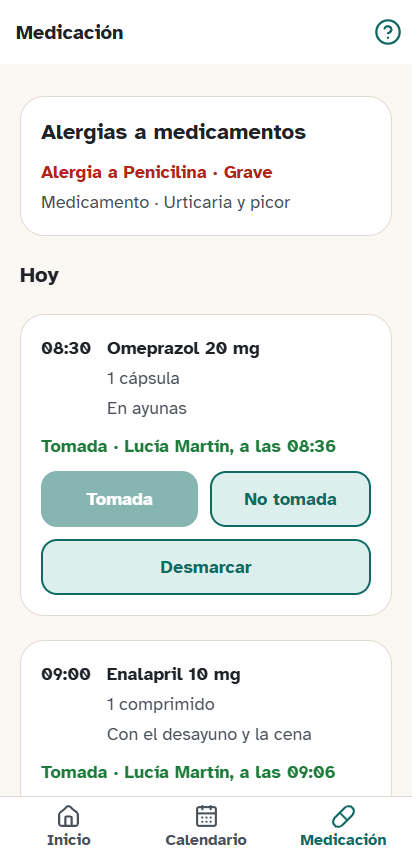

Medicación
Qué toma la persona cuidada, cuándo, y si ya se ha dado.

Las tomas de hoy
Solo para: coordinación, quien cuida, servicios externos
La pestaña «Medicación» muestra las tomas del día por horas. Al darla, márcala como dada; si no se ha podido, como no dada.
Si te equivocas, puedes cambiarla durante 24 horas.
Si una toma de los últimos 7 días se quedó sin marcar, sale en «Sin marcar de días anteriores»: pasadas 24 horas ya no se puede marcar como tomada, pero sí como no tomada, con el motivo.
Quien está de turno recibe un aviso a la hora de cada toma, y la coordinación otro si pasa una hora sin marcar.
Añadir un medicamento
Solo para: coordinación, quien cuida
Pulsa «Nuevo medicamento», búscalo por su nombre y elígelo de la lista oficial. Pon la dosis y los horarios (la hora y los días de la semana).
Si es «solo si hace falta», no tiene horario: se marca cada vez que se da.
Escanear la caja
Solo para: coordinación, quien cuida · Solo en el móvil
En vez de buscarlo, pulsa «Escanear la caja» y enfoca el código de barras o el código cuadrado de la caja. Rellena el nombre, la presentación y, si se puede leer, la caducidad.
La imagen no sale de tu móvil.
¿Qué medicamento es?
Solo para: coordinación, quien cuida, servicios externos · Solo en el móvil
Si no ves bien la caja, pulsa «¿Qué medicamento es?» y haz una foto donde se vea el nombre. La app dice cuál de los medicamentos es y si toca ahora, cuándo es la próxima toma o si ya está dada.
El texto se reconoce en el móvil, sin conexión, y la foto no se guarda.
Cajas y caducidad
Solo para: coordinación, quien cuida
Si apuntas cuántas unidades quedan, la app las descuenta con cada toma y avisa cuando quedan para menos de 7 días.
Al comprar más, pulsa «Añadir una caja». También avisa antes de que caduque.
Prospecto explicado
✦ Premium
En cada medicamento, el prospecto oficial resumido en palabras sencillas: para qué es, cómo tomarlo y a qué estar atento. No sustituye al médico ni al farmacéutico.
Sin conexión
Solo en el móvil
La medicación y el calendario se pueden consultar sin internet. Si marcas una toma sin conexión, se envía sola al recuperarla.
¿Aún no usas Tutelia?
Es gratis para organizar el día a día entre varias personas. Así se empieza.